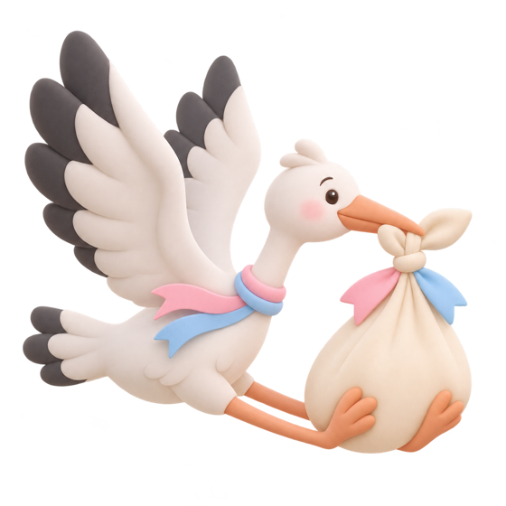

🎈 Online cinsiyet partisi
Cinsiyet partisine
davetlisin!
Kız mı, erkek mi? Tahminini yap,
açılışı birlikte izleyelim.
 PinkOrBlue · by AnberTech
PinkOrBlue · by AnberTech🎈 Online cinsiyet partisi
Kız mı, erkek mi? Tahminini yap,
açılışı birlikte izleyelim.
PinkOrBlue · by AnberTech